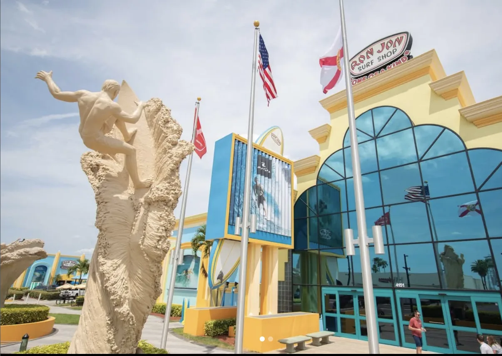
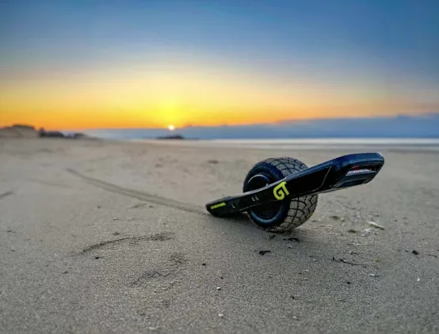
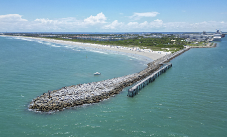
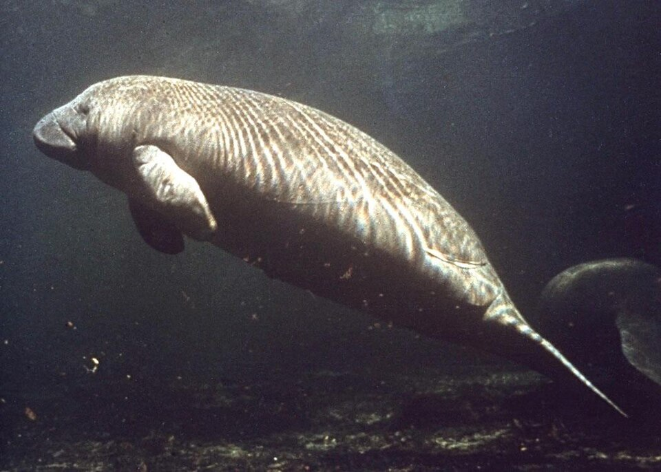
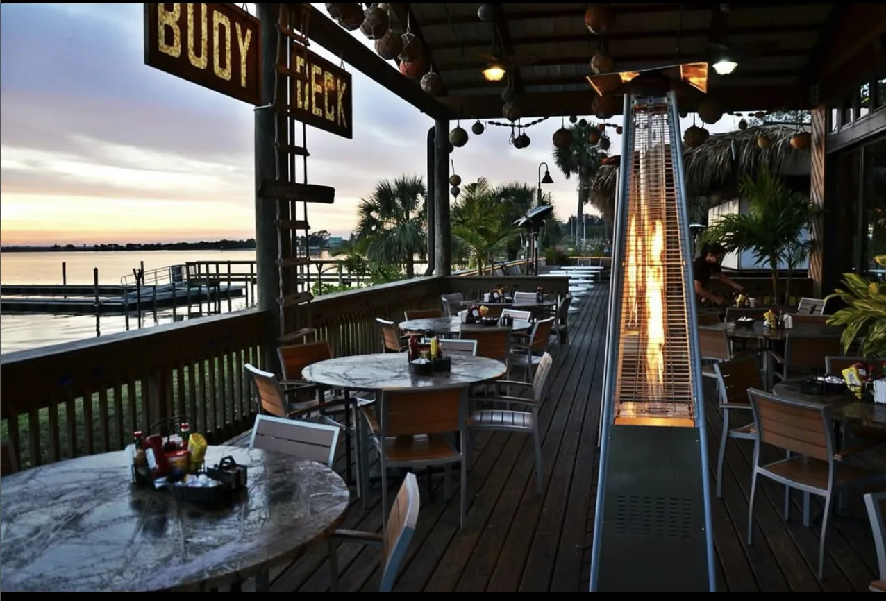
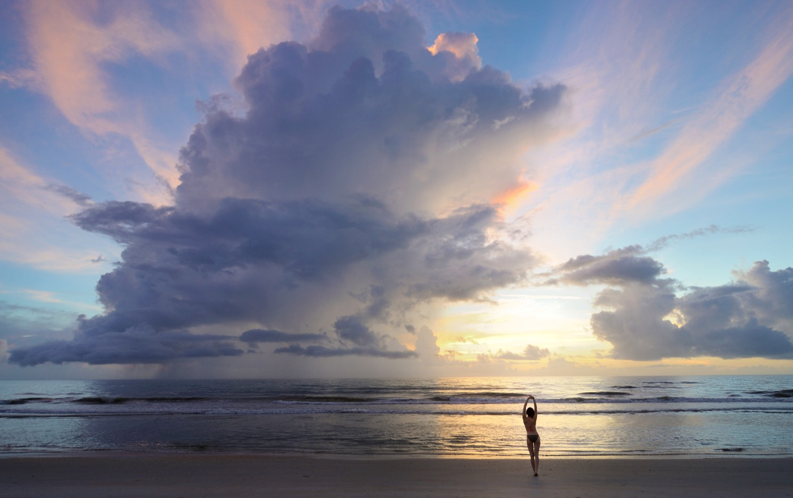
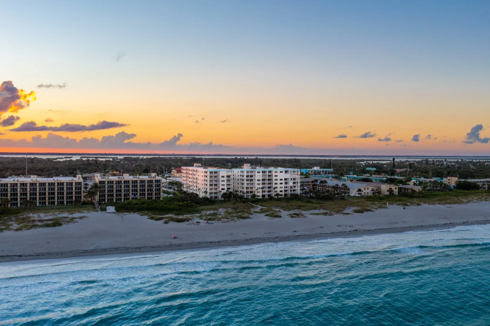
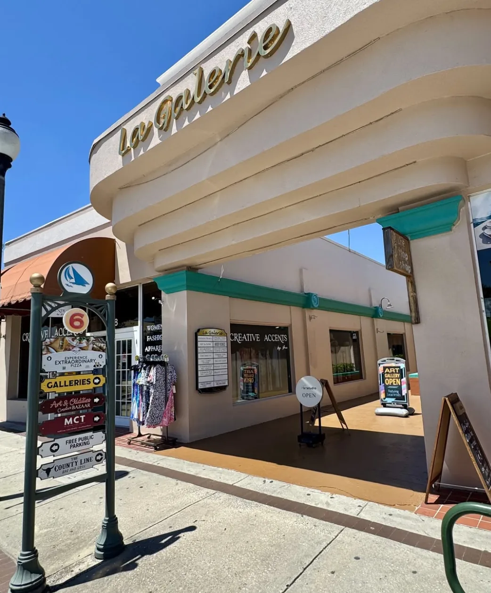
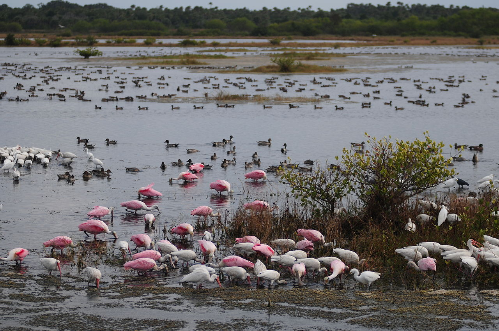

Food & Drink
Places to Eat
Cocoa Beach restaurants, cafes, dessert spots, and casual bars we point guests toward when they want an easy meal near Sandcastles or a better dinner out.

Food & Drink
Cocoa Beach
The Fat Donkey
A Cocoa Beach favorite for ice cream, coffee, desserts, and an easy after-beach treat. Good for families, late cravings, and a casual walk-up stop.

Food & Drink
Cocoa Beach
Brano's Italian Grill
A comfortable Italian dinner option for pasta, seafood, wine, and a sit-down meal after a beach day.

Food & Drink
Cocoa Beach
Long Doggers Cocoa Beach
Casual, beach-town food with sandwiches, seafood, bowls, and a relaxed local feel. Easy for families and groups.

Food & Drink
Cocoa Beach
Rock the Guac
A quick, casual pick for tacos, bowls, guacamole, and an easy meal when you do not want a long dinner production.

Food & Drink
Cocoa Beach · breakfast & lunch
Simply Delicious Cafe & Bakery
A beloved breakfast and lunch spot with generous portions, fresh bakery items, and the kind of local feel guests remember.

Food & Drink
Cocoa Beach
4th Street Fillin Station
A lively restaurant and bar with a big menu, craft drinks, brunch, and a fun setting for a casual night out.
Food & Drink
Cocoa Beach
Gregory's on the Beach
A classic Cocoa Beach dinner spot for seafood, steak, and a more traditional sit-down night near the ocean.

Food & Drink
Cocoa Beach
JT's Social Bar
A casual local bar option for drinks, bites, sports, and an easygoing Cocoa Beach night out.

Food & Drink
Cocoa Beach
Florida's Fresh Grill
A polished dinner choice for fresh seafood, steaks, and a date-night or special-occasion meal during a beach stay.
Food & Drink
Cocoa Beach
Whisk & Grind
A breakfast and brunch option for coffee, eggs, sweet plates, and a slower morning before the beach.

Food & Drink
Cocoa Beach
The Surfinista
Coffee, smoothies, acai, light bites, and a surf-inspired stop that fits the Cocoa Beach morning routine.

Food & Drink
Cocoa Beach
Dirty Birds Tiki Bar
A casual tiki-bar stop for drinks, bar food, and a laid-back night when the plan is simple.
Close By
Places to Visit
Beach, surf, port, nature, and space attractions that fit naturally into a Cocoa Beach stay without turning the day into a long road trip.

Beaches
Cocoa Beach
Sidney Fischer Park
Sidney Fischer Park and Lori Wilson Park offer public access with parking, restrooms, and lifeguards. N Atlantic Ave has beach access points all the way up.
Shopping & Culture
Cocoa Beach · 1 mile from Sandcastles
Cocoa Beach Pier
Shops, bars, restaurants, live music, and one of the easiest Cocoa Beach landmarks to visit without overplanning.

Shopping & Culture
Cocoa Beach
Ron Jon Surf Shop
Open 24 hours, 365 days a year. Even if you do not buy anything, walking through is part of the Cocoa Beach experience.
Water Sports
Cocoa Beach
Cocoa Beach Surf School
Lessons for all levels in the birthplace of East Coast surfing. Good for first-timers, families, and guests who want to do more than sit on the sand.

Water Sports
Cocoa Beach
OneWheel Rental
A fun way to cruise the hard-packed beach at low tide or roll through town when you want a different way to explore Cocoa Beach.

Water Sports
Indian River Lagoon
Kayaking the Thousand Islands
Paddle mangrove tunnels on the Banana River side of Cocoa Beach. Manatees, dolphins, birds, and calm-water tours are part of the appeal.

Beaches
Port Canaveral · 6 miles north
Jetty Park Beach
A family-friendly beach at the entrance to Port Canaveral. Watch ships pass, fish the pier, or use it as a launch-viewing plan.

Water Sports
Port Canaveral · 6 miles north
Fishing Charters
Port Canaveral is a strong offshore fishing departure point for half-day and full-day trips across different seasons.

Water Sports
Port Canaveral · 6 miles north
Dolphin & Wildlife Tours
Boat tours around the port and lagoon are an easy way to see dolphins, birds, and the working waterfront from the water.

Food & Drink
Port Canaveral · 6 miles north
Grills Seafood Deck & Tiki Bar
A waterfront Port Canaveral stop with an outdoor deck, live music, fresh fish, and a good view of the port channel.

Food & Drink
Port Canaveral · 6 miles north
Fishlips Waterfront Bar & Grill
A three-story waterfront restaurant where guests can watch ships, port traffic, and sometimes SpaceX recovery activity.

Space
Merritt Island · 12 miles north
Kennedy Space Center Visitor Complex
A full-day Space Coast experience with rockets, Atlantis, astronaut history, and launch-viewing opportunities when schedules line up.
A Little Farther
Day Trips
These are the bigger Space Coast and Central Florida outings that work best when you want a change of scenery from Cocoa Beach.

Beaches
North of Cocoa Beach · 12 miles
Canaveral National Seashore
A quieter, undeveloped stretch of Atlantic coastline with wildlife, turtle nesting, and a very different feel from central Cocoa Beach.
Nature & Wildlife
Merritt Island · 12 miles north
Merritt Island National Wildlife Refuge
Birding, wildlife drives, manatees, alligators, and natural Florida habitat beside the space center.

Beaches
Satellite Beach · 8 miles south
Satellite Beach
A quieter beach-town option south of Cocoa Beach, useful when guests want a less touristy stretch of coast.
Shopping & Culture
Cocoa · 20 min west
Cocoa Village
Historic downtown on the Indian River with independent shops, restaurants, events, and a different pace from the beach.

Nature & Wildlife
Melbourne · 25 miles south
Brevard Zoo
An award-winning zoo with kayaking, animal habitats, zip lining, and a strong family-friendly day-trip option.

Shopping & Culture
Melbourne · 30 miles south
Downtown Melbourne
A walkable arts, dining, and shopping district with galleries, restaurants, cocktails, and monthly events.

Nature & Wildlife
Viera · about 35 miles southwest
Viera Wetlands
A low-key wildlife stop for birding, walking, photography, and seeing a different side of Brevard County within an hour of Cocoa Beach.

Day Trips
Orlando · 50 miles west
Orlando Day Trip
Theme parks, restaurants, shopping, and downtown Orlando are close enough for a day trip while still sleeping at the beach.

Day Trips
St. Augustine · 2.5 hours north
St. Augustine
America's oldest city, with Spanish colonial streets, the fort, restaurants, museums, and a full-day road-trip feel.